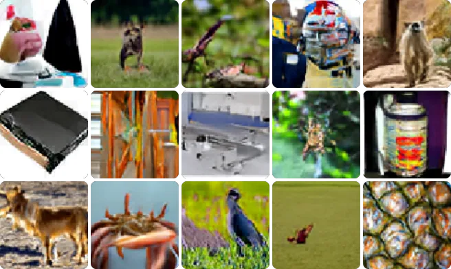
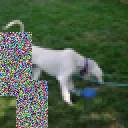
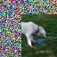
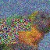
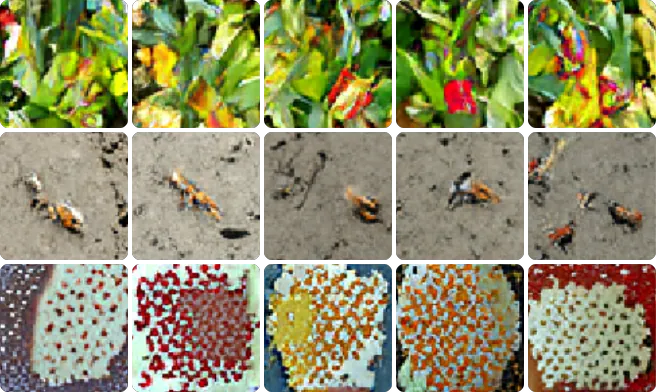
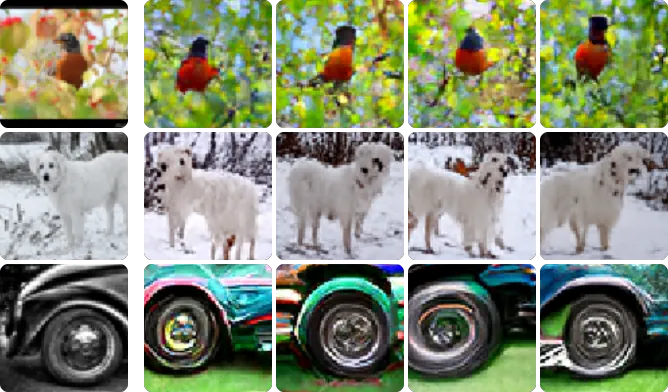
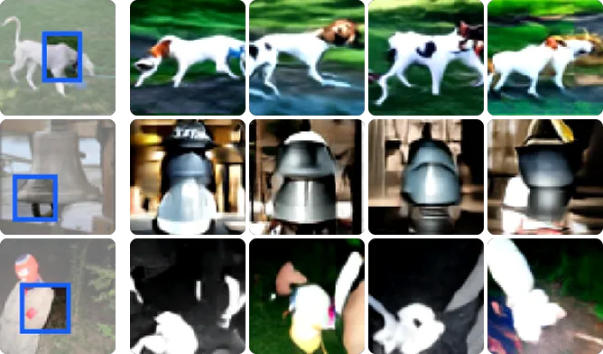

<style>
    :root { --rep: #2563eb; --emb: #7c3aed; --pix: #b45309; --sl: #475569; --rep-f: #eff6ff; --emb-f: #f5f3ff; --pix-f: #fffbeb; --sl-f: #f1f5f9; --grid: #ececef; --nz0: #ffffff; --nz1: #9ca3af; }
    @media (prefers-color-scheme: dark) {
        :root { --rep: #60a5fa; --emb: #a78bfa; --pix: #fbbf24; --sl: #94a3b8; --rep-f: rgba(96, 165, 250, 0.14); --emb-f: rgba(167, 139, 250, 0.16); --pix-f: rgba(251, 191, 36, 0.13); --sl-f: rgba(148, 163, 184, 0.14); --grid: #222225; --nz0: #2c2c2f; --nz1: #d4d4d8; }
    }
    .dem-media { margin-bottom: 16px; }
    .dem-media img { display: block; width: 100%; height: auto; }
    .dem-fig { margin-block: 0 48px; }
    .dem-fig > figcaption, main .caption { margin: 0; }
    main h2 { margin-bottom: 12px; }
    .dem-svg { display: block; width: 100%; height: auto; min-width: 540px; }
    .dem-svg.dem-fit { min-width: 0; max-width: 560px; margin: 0 auto; }
    .dem-svg.dem-fit .lb { font-size: 14px; }
    .dem-svg text { font-family: var(--font); font-size: 15px; fill: var(--text); }
    .dem-svg .lb, .dem-svg .tick { font-size: 13px; fill: var(--muted); }
    .dem-svg .strong { fill: var(--text); font-weight: 600; }
    .dem-svg .sym { font-size: 20px; font-style: italic; }
    .dem-svg .sub { font-size: 12px; }
    .dem-svg .net { fill: var(--surface); stroke: var(--border); }
    .dem-svg .net-t { font-size: 17px; font-weight: 600; }
    .dem-svg .nd { fill: var(--bg); stroke-width: 2; }
    .dem-svg .nd-gen { stroke: var(--emb); }
    .dem-svg.dem-plane { min-width: 460px; }
    .dem-svg .ln { fill: none; stroke-width: 2; }
    .dem-svg .ln.enc { stroke: var(--rep); } .dem-svg .ln.gen { stroke: var(--emb); } .dem-svg .ln.dec { stroke: var(--pix); }
    .dem-svg .ahd { fill: var(--muted); }
    .dem-svg .nz0 { stop-color: var(--nz0); } .dem-svg .nz1 { stop-color: var(--nz1); }
    .dem-svg .grid { stroke: var(--grid); }
    .dem-svg .axis { stroke: var(--muted); }
    .dem-svg .ax { font-size: 13px; fill: var(--text); }
    .dem-svg .pt { fill: var(--muted); opacity: 0.7; }
    .dem-svg .pt-ours { fill: var(--rep); }
    .dem-svg .pt-ours-open { fill: var(--bg); stroke: var(--rep); stroke-width: 2; }
    .dem-svg .pt-open { fill: var(--bg); stroke: var(--muted); stroke-width: 2; }
    .dem-svg .lab.lab-rep { fill: var(--rep); }
    .dem-svg .lab { font-size: 13px; fill: var(--muted); }
    .dem-svg .lab-ours { font-size: 15px; font-weight: 600; fill: var(--rep); }
    .dem-svg .pt-g:hover .pt { opacity: 1; fill: var(--text); }
    .dem-svg .lvl { font-size: 13px; font-weight: 600; }
    .dem-svg .lvl.emb, .dem-svg .sch-t.emb { fill: var(--emb); }
    .dem-svg .lvl.pix, .dem-svg .sch-t.pix { fill: var(--pix); }
    .dem-svg .sch-t { font-weight: 600; }
    .dem-svg .sch.emb { fill: var(--emb); fill-opacity: 0.18; stroke: var(--emb); stroke-width: 1.5; }
    .dem-svg .sch.pix { fill: var(--pix); fill-opacity: 0.18; stroke: var(--pix); stroke-width: 1.5; }
    .dem-svg .mdn { stroke-width: 1; stroke-dasharray: 3 3; }
    .dem-svg .mdn.emb { stroke: var(--emb); } .dem-svg .mdn.pix { stroke: var(--pix); }
    .dem-svg.dem-copy { max-width: 420px; }
    /* Tau slider: the copy is solid below full noise, dashed and muted at exactly 1. */
    #dem-tau { --thumb: 28px; }
    #dem-tau .cp-grain { fill: var(--sl); }
    .dem-tau-wrap { position: relative; max-width: 420px; margin: 0 auto; }
    #dem-tau[data-full] .cp-box, #dem-tau[data-full] .cp-ln { stroke: var(--muted); stroke-dasharray: 4 3; }
    .dem-tau-ctl { max-width: 420px; margin: 8px auto 0; }
    .dem-tau-ctl[hidden] { display: none; }
    #dem-tau-r { display: block; width: 100%; height: 44px; margin: 0; padding: 0; background: none; -webkit-appearance: none; appearance: none; cursor: pointer; }
    #dem-tau-r::-webkit-slider-runnable-track { height: 8px; background: linear-gradient(90deg, var(--nz0), var(--nz1)); box-shadow: 0 0 0 1px var(--border); }
    #dem-tau-r::-moz-range-track { height: 8px; background: linear-gradient(90deg, var(--nz0), var(--nz1)); box-shadow: 0 0 0 1px var(--border); }
    #dem-tau-r::-webkit-slider-thumb { -webkit-appearance: none; width: var(--thumb); height: var(--thumb); margin-top: calc((8px - var(--thumb)) / 2); border: 0; border-radius: 0; background: var(--text); }
    #dem-tau-r::-moz-range-thumb { width: var(--thumb); height: var(--thumb); border: 0; border-radius: 0; background: var(--text); }
    #dem-tau-r:focus { outline: none; }
    #dem-tau-r:focus-visible::-webkit-slider-thumb { outline: 2px solid var(--rep); outline-offset: 2px; }
    #dem-tau-r:focus-visible::-moz-range-thumb { outline: 2px solid var(--rep); outline-offset: 2px; }
    .dem-tau-scale { position: relative; height: 1.5em; color: var(--muted); font-size: var(--text-micro); line-height: 1.5; }
    .dem-tau-scale span { position: absolute; top: 0; white-space: nowrap; }
    .dem-tau-scale .s0 { left: 0; } .dem-tau-scale .s1 { right: 0; }
    .dem-tau-scale i { position: absolute; top: -14px; bottom: 100%; width: 1px; height: 10px; left: calc(var(--thumb) / 2 + 0.95 * (100% - var(--thumb))); background: var(--muted); }
    .dem-tau-scale .med { right: calc(100% - (var(--thumb) / 2 + 0.95 * (100% - var(--thumb)))); }
    .dem-tau-line { max-width: 420px; min-height: 3em; margin: 8px auto 0; color: var(--muted); font-size: var(--text-secondary); line-height: 1.5; }
    /* Phones: the stacked method figures (.only-phone) replace the wide ones. */
    .dem-svg--phone { min-width: 0; max-width: 480px; margin: 0 auto; }
    .dem-svg--phone .lb { font-size: 13px; }
    .dem-svg--phone .net-t { font-size: 16px; }
    /* Training and inference figures: pastel boxes with a 600-level outline. Blue is the network and its embeddings, violet the embedding denoiser, amber pixels, slate the teacher and noise. */
    main h3 { margin-block: 40px 8px; font-size: var(--text-lede); font-weight: 600; }
    .dem-flow .bx { stroke-width: 1.5; }
    .dem-flow .bx.rep { fill: var(--rep-f); stroke: var(--rep); } .dem-flow .bx.emb { fill: var(--emb-f); stroke: var(--emb); }
    .dem-flow .bx.pix { fill: var(--pix-f); stroke: var(--pix); } .dem-flow .bx.sl { fill: var(--sl-f); stroke: var(--sl); }
    .dem-flow .bx.dash, .dem-flow .ln.dash { stroke-dasharray: 5 4; }
    .dem-flow .bt { font-size: 15px; font-weight: 600; fill: var(--text); }
    .dem-flow .sm { font-size: 12px; fill: var(--muted); }
    .dem-flow .strong { fill: var(--text); font-weight: 600; }
    .dem-flow .hd { font-size: 14px; font-weight: 600; fill: var(--text); }
    .dem-flow .role { font-size: 13px; font-weight: 600; }
    .dem-flow .t-rep { fill: var(--rep); } .dem-flow .t-emb { fill: var(--emb); } .dem-flow .t-pix { fill: var(--pix); } .dem-flow .t-sl { fill: var(--sl); }
    .dem-flow .ln.rep { stroke: var(--rep); } .dem-flow .ln.emb { stroke: var(--emb); } .dem-flow .ln.pix { stroke: var(--pix); } .dem-flow .ln.sl { stroke: var(--sl); }
    .dem-flow .chip .cb { fill: var(--bg); stroke-width: 1.5; }
    .dem-flow .chip.rep .cb { stroke: var(--rep); } .dem-flow .chip.rep .bars { fill: var(--rep); }
    .dem-flow .chip.emb .cb { stroke: var(--emb); } .dem-flow .chip.emb .bars { fill: var(--emb); }
    .dem-flow .chip.sl .cb { stroke: var(--sl); } .dem-flow .chip.sl .bars { fill: var(--sl); }
    .dem-flow .chip.nz .cb { stroke-dasharray: 3 2; } .dem-flow .chip.nz .bars { fill: var(--nz1); }
    .dem-flow .tf { fill: none; stroke-width: 2; } .dem-flow .tf.pix { stroke: var(--pix); }
    .dem-flow .tf.void { fill: var(--surface); stroke: var(--sl); stroke-width: 1.5; stroke-dasharray: 4 3; }
    .dem-flow .pl { fill: var(--bg); stroke: var(--sl); stroke-width: 1.5; } .dem-flow .pl-x { stroke: var(--sl); stroke-width: 1.5; }
    .dem-flow .jn { fill: var(--sl); }
    .dem-svg.dem-flow { min-width: 0; }
    .dem-svg--phone.dem-flow .bt { font-size: 14px; }
    .dem-flow .dfill { fill: var(--emb); fill-opacity: 0.12; } .dem-flow .dline { fill: none; stroke: var(--emb); stroke-width: 1.5; }
    .dem-flow .dbase { stroke: var(--sl); stroke-width: 1; } .dem-flow .dtick { stroke: var(--emb); stroke-width: 1; } .dem-flow .dot { fill: var(--emb); stroke: var(--bg); stroke-width: 1.5; }
    .dem-flow .chip.nv .cb { stroke: var(--sl); stroke-dasharray: 3 2; } .dem-flow .chip.nv .cells { fill: var(--sl); }
    /* Task buttons: .u parts dim outside their tasks, .v parts show only in theirs. Without JS everything stays lit. */
    .dem-flow .u { transition: opacity 0.2s; }
    @media (prefers-reduced-motion: reduce) { .dem-flow .u { transition: none; } }
    .dem-btnfig[data-task="emb"] .u:not(.on-emb), .dem-btnfig[data-task="pix"] .u:not(.on-pix), .dem-btnfig[data-task="rep"] .u:not(.on-rep),
    .dem-btnfig[data-task="gen"] .u:not(.on-gen), .dem-btnfig[data-task="cmp"] .u:not(.on-cmp) { opacity: 0.15; }
    .dem-btnfig[data-task="rep"] .v:not(.in-rep), .dem-btnfig[data-task="gen"] .v:not(.in-gen), .dem-btnfig[data-task="cmp"] .v:not(.in-cmp) { display: none; }
    .dem-btns { margin-block: 0 12px; }
    .dem-task-text { min-height: 3em; }
    /* Noise-map views: one column per view, its noise map above it. */
    .dem-views { display: grid; grid-template-columns: repeat(5, 1fr); gap: 12px; max-width: 680px; margin: 0 auto; }
    .dem-view { margin: 0; text-align: center; font-size: var(--text-caption); line-height: 1.3; }
    .dem-view figcaption { display: flex; flex-direction: column; justify-content: flex-end; min-height: 2.6em; margin-block: 0 6px; color: var(--text); font-size: inherit; line-height: 1.3; }
    .dem-view figcaption span { display: block; }
    .dem-role { color: var(--muted); }
    .dem-role.rep { color: var(--rep); font-weight: 600; } .dem-role.sl { color: var(--sl); font-weight: 600; } .dem-role.pix { color: var(--pix); font-weight: 600; }
    .dem-view .dem-map { display: block; width: 44%; margin: 0 auto 10px; outline: 1px solid var(--border); }
    .dem-view img { display: block; width: 100%; height: auto; image-rendering: pixelated; }
    .dem-legend { display: flex; align-items: center; justify-content: center; gap: 8px; margin-block: 16px 0; color: var(--muted); font-size: var(--text-caption); }
    .dem-legend i { width: 96px; height: 8px; outline: 1px solid var(--border); background: linear-gradient(90deg, #fff, #1e293b); }
    /* Paired image panels: side by side on large screens, stacked on phones. */
    .dem-pair { display: grid; grid-template-columns: 656fr 668fr; gap: 32px; align-items: start; }
    .dem-pair.even { grid-template-columns: 668fr 828fr; }
    .dem-pair img { display: block; width: 100%; height: auto; }
    .dem-pair p { margin-block: 8px 0; color: var(--muted); font-size: var(--text-secondary); line-height: 1.5; }
    @media (max-width: 640px) {
        .dem-pair, .dem-pair.even { grid-template-columns: 1fr; gap: 24px; }
        .dem-views { gap: 6px; }
        .dem-view { font-size: var(--text-micro); }
        .dem-view figcaption { min-height: 5.2em; }
        .dem-svg.dem-plane { min-width: 0; }
        #dem-tau { --thumb: 32px; }
        .dem-plane .lab, .dem-plane .tick { font-size: 21px; }
        .dem-plane .ax { font-size: 18px; }
        .dem-plane .lab-ours { font-size: 24px; }
        .dem-svg.dem-fit .lb { font-size: 15px; }
    }
</style>

<section>
    <figure class="dem-fig">
        <div class="dem-media wide"></div>
        <figcaption>Images generated without labels, by one network trained by denoising alone. All samples on this page are uncurated.</figcaption>
    </figure>
</section>

<section id="tldr">
    <p class="tldr"><strong>TL;DR:</strong> A diffusion model at two levels. One network denoises a compact embedding and the pixels, so it learns visual representations and generates images without labels, trained by denoising alone.</p>
</section>
<section class="intro">
    <p>Representations learned by reconstructing, denoising or generating the image still trail those of non-generative self-supervised learning (SSL) methods. An image's exact color and framing are <em>stochastic details</em> that vary among images with the same content. A representation trained to reproduce the image is pushed to encode these details. Recognition, in contrast, benefits from invariance to them.</p>
</section>

<section id="method">
    <h2>A diffusion model at two levels</h2>
    <p>DEM generates the representation and the image separately, within one network and with one denoising objective. In representation space, it denoises the embedding of an image given another view of the same image. In pixel space, it generates the image that this embedding describes. The network is one shared backbone, a Transformer, with two small heads on it. The embedding denoiser works at the embedding level, and the pixel head works at the pixel level.</p>
    <h3>Training</h3>
    <p>Each training step takes three views of one image. The teacher, an exponential moving average (EMA) of the network, embeds a clean view into the target. At the embedding level, the backbone reads the student view, and the embedding denoiser recovers the target from a noisy copy of it (loss 1). At the pixel level, the backbone reads a noisy copy of the image with the target as its condition, and the pixel head predicts the image (loss 2).</p>
    <figure class="dem-fig dem-btnfig" id="dem-train">
        <div class="tabs dem-btns" role="group" aria-label="Training levels" hidden>
            <button type="button" class="btn" data-task="" aria-pressed="true">Both levels</button>
            <button type="button" class="btn" data-task="emb" aria-pressed="false">Embedding level</button>
            <button type="button" class="btn" data-task="pix" aria-pressed="false">Pixel level</button>
        </div>
        <div class="dem-media wide only-desk"><svg class="dem-svg dem-flow" viewBox="0 0 860 384" role="img" aria-labelledby="tr-t">
<title id="tr-t">One training step. One shared backbone carries two modules, the embedding denoiser and the pixel head. The teacher, an EMA copy of the network, embeds the clean view into the target. Embedding level: the backbone reads the student view, and the embedding denoiser predicts the target from a noisy copy of it (loss 1). Pixel level: the backbone reads the noisy image with the target as its condition, and the pixel head predicts the image (loss 2).</title>
<defs><marker id="ah-tr" viewBox="0 0 10 10" refX="9" refY="5" markerWidth="7" markerHeight="7" orient="auto-start-reverse"><path d="M0 0L10 5L0 10z" class="ahd"/></marker></defs>
<g class="u on-emb on-pix"><image href="view_clean.webp" x="28" y="32" width="64" height="64" preserveAspectRatio="none"/><text class="role t-sl" x="60" y="112" text-anchor="middle">teacher sees</text><path class="ln sl" d="M96 64H148" marker-end="url(#ah-tr)"/><rect class="bx sl dash" x="152" y="40" width="128" height="48" rx="6"/><text class="bt" x="216.0" y="69.0" text-anchor="middle">Teacher</text><path class="ln sl" d="M284 64H338" marker-end="url(#ah-tr)"/><g class="chip sl"><rect class="cb" x="340.0" y="50.0" width="64" height="28"/><g class="bars"><rect x="351.0" y="58.0" width="6" height="16.0"/><rect x="360.0" y="62.0" width="6" height="12.0"/><rect x="369.0" y="56.0" width="6" height="18.0"/><rect x="378.0" y="64.0" width="6" height="10.0"/><rect x="387.0" y="59.0" width="6" height="15.0"/></g></g><text class="sm strong" x="372" y="40" text-anchor="middle">target</text><path class="ln sl dash" d="M216 152V90" marker-end="url(#ah-tr)"/><text class="sm" x="224" y="124" text-anchor="start">EMA</text></g>
<g class="u on-emb"><path class="ln sl" d="M404 64H456"/><path class="ln emb" d="M456 64V166" marker-end="url(#ah-tr)"/><text class="sm" x="464" y="108" text-anchor="start">+ noise</text><text class="sm strong" x="464" y="140" text-anchor="start">noisy target</text><image href="view_all.webp" x="28" y="160" width="64" height="64" preserveAspectRatio="none"/><text class="role t-rep" x="60" y="240" text-anchor="middle">student sees</text><path class="ln rep" d="M96 192H148" marker-end="url(#ah-tr)"/><path class="ln emb" d="M524 192H582" marker-end="url(#ah-tr)"/><g class="chip rep"><rect class="cb" x="584.0" y="178.0" width="64" height="28"/><g class="bars"><rect x="595.0" y="186.0" width="6" height="16.0"/><rect x="604.0" y="190.0" width="6" height="12.0"/><rect x="613.0" y="184.0" width="6" height="18.0"/><rect x="622.0" y="192.0" width="6" height="10.0"/><rect x="631.0" y="187.0" width="6" height="15.0"/></g></g><text class="sm strong" x="616" y="224" text-anchor="middle">predicted target</text><path class="ln emb" d="M652 192H706" marker-end="url(#ah-tr)"/><rect class="bx emb" x="708" y="168" width="140" height="48" rx="6"/><text class="bt t-emb" x="778.0" y="190.0" text-anchor="middle">Loss 1</text><text class="sm" x="778.0" y="206.0" text-anchor="middle">against the target</text></g>
<g class="u on-pix"><path class="ln sl" d="M372 78V150" marker-end="url(#ah-tr)"/><text class="sm" x="364" y="124" text-anchor="end">pixel condition</text><image href="view_noise.webp" x="28" y="288" width="64" height="64" preserveAspectRatio="none"/><text class="role t-pix" x="60" y="368" text-anchor="middle">pixel pass sees</text><path class="ln pix" d="M96 320H148" marker-end="url(#ah-tr)"/><path class="ln pix" d="M524 320H582" marker-end="url(#ah-tr)"/><image href="tile_view.webp" x="584" y="288" width="64" height="64" preserveAspectRatio="none"/><text class="sm" x="616" y="368" text-anchor="middle">predicted image</text><path class="ln pix" d="M652 320H706" marker-end="url(#ah-tr)"/><rect class="bx pix" x="708" y="296" width="140" height="48" rx="6"/><text class="bt t-pix" x="778.0" y="318.0" text-anchor="middle">Loss 2</text><text class="sm" x="778.0" y="334.0" text-anchor="middle">against the image</text></g>
<rect class="bx rep" x="152" y="152" width="240" height="208" rx="6"/><text class="bt" x="272.0" y="262.5" text-anchor="middle">Vision Transformer</text>
<g class="u on-emb head"><rect class="bx emb" x="392" y="168" width="128" height="48" rx="6"/><text class="bt" x="456.0" y="189.0" text-anchor="middle">Embedding</text><text class="bt" x="456.0" y="206.0" text-anchor="middle">denoiser</text></g>
<g class="u on-pix head"><rect class="bx pix" x="392" y="296" width="128" height="48" rx="6"/><text class="bt" x="456.0" y="325.0" text-anchor="middle">Pixel head</text></g>
</svg></div>
        <div class="dem-media wide only-phone"><svg class="dem-svg dem-svg--phone dem-flow" viewBox="0 0 360 496" role="img" aria-labelledby="trp-t">
<title id="trp-t">One training step. One shared backbone carries two modules, the embedding denoiser and the pixel head. The teacher, an EMA copy of the network, embeds the clean view into the target. Embedding level: the backbone reads the student view, and the embedding denoiser predicts the target from a noisy copy of it (loss 1). Pixel level: the backbone reads the noisy image with the target as its condition, and the pixel head predicts the image (loss 2).</title>
<defs><marker id="ah-trp" viewBox="0 0 10 10" refX="9" refY="5" markerWidth="7" markerHeight="7" orient="auto-start-reverse"><path d="M0 0L10 5L0 10z" class="ahd"/></marker></defs>
<g class="u on-emb on-pix"><image href="view_clean.webp" x="8" y="16" width="48" height="48" preserveAspectRatio="none"/><path class="ln sl" d="M60 40H70" marker-end="url(#ah-trp)"/><rect class="bx sl dash" x="72" y="16" width="80" height="48" rx="6"/><text class="bt" x="112.0" y="45.0" text-anchor="middle">Teacher</text><path class="ln sl" d="M156 40H170" marker-end="url(#ah-trp)"/><g class="chip sl"><rect class="cb" x="172.0" y="26.0" width="64" height="28"/><g class="bars"><rect x="183.0" y="34.0" width="6" height="16.0"/><rect x="192.0" y="38.0" width="6" height="12.0"/><rect x="201.0" y="32.0" width="6" height="18.0"/><rect x="210.0" y="40.0" width="6" height="10.0"/><rect x="219.0" y="35.0" width="6" height="15.0"/></g></g><text class="sm strong" x="204" y="16" text-anchor="middle">target</text><text class="role t-sl" x="4" y="80" text-anchor="start">teacher sees</text><path class="ln sl dash" d="M112 208V66" marker-end="url(#ah-trp)"/><text class="sm" x="120" y="104" text-anchor="start">EMA</text></g>
<g class="u on-emb"><path class="ln sl" d="M236 40H348"/><text class="sm" x="292" y="32" text-anchor="middle">+ noise</text><path class="ln emb" d="M348 40V280H338" marker-end="url(#ah-trp)"/><image href="view_all.webp" x="288" y="112" width="48" height="48" preserveAspectRatio="none"/><text class="role t-rep" x="356" y="176" text-anchor="end">student sees</text><path class="ln rep" d="M312 184V206" marker-end="url(#ah-trp)"/><path class="ln emb" d="M256 308V344" marker-end="url(#ah-trp)"/><g class="chip rep"><rect class="cb" x="224.0" y="346.0" width="64" height="28"/><g class="bars"><rect x="235.0" y="354.0" width="6" height="16.0"/><rect x="244.0" y="358.0" width="6" height="12.0"/><rect x="253.0" y="352.0" width="6" height="18.0"/><rect x="262.0" y="360.0" width="6" height="10.0"/><rect x="271.0" y="355.0" width="6" height="15.0"/></g></g><text class="sm strong" x="256" y="392" text-anchor="middle">predicted target</text><path class="ln emb" d="M256 400V430" marker-end="url(#ah-trp)"/><rect class="bx emb" x="176" y="432" width="160" height="48" rx="6"/><text class="bt t-emb" x="256.0" y="454.0" text-anchor="middle">Loss 1</text><text class="sm" x="256.0" y="470.0" text-anchor="middle">against the target</text></g>
<g class="u on-pix"><path class="ln sl" d="M204 54V206" marker-end="url(#ah-trp)"/><text class="sm" x="212" y="184" text-anchor="start">condition</text><image href="view_noise.webp" x="8" y="112" width="48" height="48" preserveAspectRatio="none"/><text class="role t-pix" x="4" y="176" text-anchor="start">pixel pass sees</text><path class="ln pix" d="M32 184V206" marker-end="url(#ah-trp)"/><path class="ln pix" d="M88 308V334" marker-end="url(#ah-trp)"/><image href="tile_view.webp" x="64" y="336" width="48" height="48" preserveAspectRatio="none"/><text class="sm" x="88" y="400" text-anchor="middle">predicted image</text><path class="ln pix" d="M88 408V430" marker-end="url(#ah-trp)"/><rect class="bx pix" x="8" y="432" width="160" height="48" rx="6"/><text class="bt t-pix" x="88.0" y="454.0" text-anchor="middle">Loss 2</text><text class="sm" x="88.0" y="470.0" text-anchor="middle">against the image</text></g>
<rect class="bx rep" x="8" y="208" width="328" height="48" rx="6"/><text class="bt" x="172.0" y="238.5" text-anchor="middle">Vision Transformer</text>
<g class="u on-pix head"><rect class="bx pix" x="8" y="256" width="160" height="48" rx="6"/><text class="bt" x="88.0" y="285.0" text-anchor="middle">Pixel head</text></g>
<g class="u on-emb head"><rect class="bx emb" x="176" y="256" width="160" height="48" rx="6"/><text class="bt" x="256.0" y="277.0" text-anchor="middle">Embedding</text><text class="bt" x="256.0" y="294.0" text-anchor="middle">denoiser</text></g>
</svg></div>
        <figcaption class="dem-task-text" aria-live="polite">One step trains both levels on one backbone, and the teacher supplies the target for both.</figcaption>
    </figure>
    <h3>Inference</h3>
    <p>After training, the teacher is no longer used. The backbone's features of an image are its embedding, the representation, and no head is needed. To generate without labels, the embedding denoiser first samples an embedding from noise with no view, and the backbone and pixel head then draw the image given it. Given only a crop, the embedding denoiser samples several embeddings that fit the crop, and the pixel head draws one image for each.</p>
    <figure class="dem-fig dem-btnfig" id="dem-infer" data-task="gen">
        <div class="tabs dem-btns" role="group" aria-label="Uses of the trained model" hidden>
            <button type="button" class="btn" data-task="rep" aria-pressed="false">Encode</button>
            <button type="button" class="btn" data-task="gen" aria-pressed="true">Generate</button>
            <button type="button" class="btn" data-task="cmp" aria-pressed="false">Complete a crop</button>
        </div>
        <div class="dem-media wide only-desk"><svg class="dem-svg dem-flow" viewBox="0 0 860 384" role="img" aria-labelledby="in-t">
<title id="in-t">Three uses of the trained model, on the same backbone and modules. Encode: the backbone turns an image into its embedding, the representation, with no module. Generate: with no view, the embedding denoiser samples an embedding from noise, then the backbone and pixel head draw an image given it. Complete a crop: given the crop, the embedding denoiser samples several embeddings, and each becomes an image.</title>
<defs><marker id="ah-in" viewBox="0 0 10 10" refX="9" refY="5" markerWidth="7" markerHeight="7" orient="auto-start-reverse"><path d="M0 0L10 5L0 10z" class="ahd"/></marker></defs>
<g class="v in-rep"><image href="tile_view.webp" x="28" y="160" width="64" height="64" preserveAspectRatio="none"/><text class="role" x="60" y="240" text-anchor="middle">image</text><path class="ln rep" d="M96 192H148" marker-end="url(#ah-in)"/></g>
<g class="v in-gen"><rect class="tf void" x="28" y="160" width="64" height="64"/><text class="sm" x="60" y="196" text-anchor="middle">no view</text></g>
<g class="v in-cmp"><image href="dog_crop.webp" x="28" y="160" width="64" height="64" preserveAspectRatio="none"/><text class="role" x="60" y="240" text-anchor="middle">crop</text><path class="ln rep" d="M96 192H148" marker-end="url(#ah-in)"/></g>
<g class="v in-gen in-cmp"><image href="noise.webp" x="28" y="288" width="64" height="64" preserveAspectRatio="none"/><text class="role" x="60" y="368" text-anchor="middle">pixel noise</text><path class="ln pix" d="M96 320H148" marker-end="url(#ah-in)"/><g class="chip nv"><rect class="cb" x="424.0" y="114.0" width="64" height="28"/><g class="cells"><rect x="435.0" y="120.0" width="6" height="16" fill-opacity="0.33"/><rect x="444.0" y="120.0" width="6" height="16" fill-opacity="0.56"/><rect x="453.0" y="120.0" width="6" height="16" fill-opacity="0.43"/><rect x="462.0" y="120.0" width="6" height="16" fill-opacity="0.60"/><rect x="471.0" y="120.0" width="6" height="16" fill-opacity="0.62"/></g></g><text class="sm" x="496" y="132" text-anchor="start">noise</text><path class="ln sl" d="M456 142V166" marker-end="url(#ah-in)"/><path class="ln pix" d="M524 320H582" marker-end="url(#ah-in)"/><text class="sm" x="364" y="124" text-anchor="end">pixel condition</text></g>
<g class="v in-rep"><path class="ln rep" d="M396 256H582" marker-end="url(#ah-in)"/><g class="chip rep"><rect class="cb" x="584.0" y="242.0" width="64" height="28"/><g class="bars"><rect x="595.0" y="250.0" width="6" height="16.0"/><rect x="604.0" y="254.0" width="6" height="12.0"/><rect x="613.0" y="248.0" width="6" height="18.0"/><rect x="622.0" y="256.0" width="6" height="10.0"/><rect x="631.0" y="251.0" width="6" height="15.0"/></g></g><text class="sm strong" x="616" y="288" text-anchor="middle">embedding</text><text class="sm" x="616" y="304" text-anchor="middle">the representation</text></g>
<g class="v in-gen"><path class="ln emb" d="M524 192H582" marker-end="url(#ah-in)"/><g class="dsk"><path class="dfill" d="M584.0 208.0L584.0 207.2 585.3 206.5 586.7 205.4 588.0 203.7 589.3 201.2 590.7 197.8 592.0 193.7 593.3 189.1 594.7 184.5 596.0 180.4 597.3 177.4 598.7 176.0 600.0 176.5 601.3 178.7 602.7 182.3 604.0 186.6 605.3 191.1 606.7 195.0 608.0 197.8 609.3 199.3 610.7 199.1 612.0 197.5 613.3 194.7 614.7 191.6 616.0 188.8 617.3 187.2 618.7 187.1 620.0 188.6 621.3 191.1 622.7 193.7 624.0 195.7 625.3 196.4 626.7 195.4 628.0 193.0 629.3 189.5 630.7 185.8 632.0 182.7 633.3 180.9 634.7 181.0 636.0 182.8 637.3 186.2 638.7 190.4 640.0 194.7 641.3 198.7 642.7 201.9 644.0 204.3 645.3 205.9 646.7 206.9 648.0 207.5L648.0 208.0Z"/><path class="dline" d="M584.0 207.2 585.3 206.5 586.7 205.4 588.0 203.7 589.3 201.2 590.7 197.8 592.0 193.7 593.3 189.1 594.7 184.5 596.0 180.4 597.3 177.4 598.7 176.0 600.0 176.5 601.3 178.7 602.7 182.3 604.0 186.6 605.3 191.1 606.7 195.0 608.0 197.8 609.3 199.3 610.7 199.1 612.0 197.5 613.3 194.7 614.7 191.6 616.0 188.8 617.3 187.2 618.7 187.1 620.0 188.6 621.3 191.1 622.7 193.7 624.0 195.7 625.3 196.4 626.7 195.4 628.0 193.0 629.3 189.5 630.7 185.8 632.0 182.7 633.3 180.9 634.7 181.0 636.0 182.8 637.3 186.2 638.7 190.4 640.0 194.7 641.3 198.7 642.7 201.9 644.0 204.3 645.3 205.9 646.7 206.9 648.0 207.5"/><path class="dbase" d="M584.0 208.0H648.0"/><path class="dtick" d="M599.0 208.0V175.9"/><circle class="dot" cx="599.0" cy="208.0" r="3.5"/></g><text class="sm strong t-emb" x="616" y="228" text-anchor="middle">1. sample an embedding</text><text class="sm" x="616" y="244" text-anchor="middle">p(z)</text><path class="ln emb" d="M616 170V100H372V150" marker-end="url(#ah-in)"/><image href="gen_sample.webp" x="584" y="288" width="64" height="64" preserveAspectRatio="none"/><text class="sm strong t-pix" x="616" y="368" text-anchor="middle">2. generated image</text></g>
<g class="v in-cmp"><path class="ln emb" d="M524 192H582" marker-end="url(#ah-in)"/><g class="dsk"><path class="dfill" d="M584.0 208.0L584.0 208.0 585.3 208.0 586.7 208.0 588.0 208.0 589.3 207.9 590.7 207.9 592.0 207.8 593.3 207.7 594.7 207.4 596.0 207.1 597.3 206.6 598.7 205.8 600.0 204.7 601.3 203.3 602.7 201.4 604.0 199.1 605.3 196.4 606.7 193.2 608.0 189.9 609.3 186.4 610.7 183.1 612.0 180.2 613.3 178.0 614.7 176.5 616.0 176.0 617.3 176.5 618.7 178.0 620.0 180.2 621.3 183.1 622.7 186.4 624.0 189.9 625.3 193.2 626.7 196.4 628.0 199.1 629.3 201.4 630.7 203.3 632.0 204.7 633.3 205.8 634.7 206.6 636.0 207.1 637.3 207.4 638.7 207.7 640.0 207.8 641.3 207.9 642.7 207.9 644.0 208.0 645.3 208.0 646.7 208.0 648.0 208.0L648.0 208.0Z"/><path class="dline" d="M584.0 208.0 585.3 208.0 586.7 208.0 588.0 208.0 589.3 207.9 590.7 207.9 592.0 207.8 593.3 207.7 594.7 207.4 596.0 207.1 597.3 206.6 598.7 205.8 600.0 204.7 601.3 203.3 602.7 201.4 604.0 199.1 605.3 196.4 606.7 193.2 608.0 189.9 609.3 186.4 610.7 183.1 612.0 180.2 613.3 178.0 614.7 176.5 616.0 176.0 617.3 176.5 618.7 178.0 620.0 180.2 621.3 183.1 622.7 186.4 624.0 189.9 625.3 193.2 626.7 196.4 628.0 199.1 629.3 201.4 630.7 203.3 632.0 204.7 633.3 205.8 634.7 206.6 636.0 207.1 637.3 207.4 638.7 207.7 640.0 207.8 641.3 207.9 642.7 207.9 644.0 208.0 645.3 208.0 646.7 208.0 648.0 208.0"/><path class="dbase" d="M584.0 208.0H648.0"/><path class="dtick" d="M607.0 208.0V192.4"/><circle class="dot" cx="607.0" cy="208.0" r="3.5"/><path class="dtick" d="M616.0 208.0V176.0"/><circle class="dot" cx="616.0" cy="208.0" r="3.5"/><path class="dtick" d="M625.0 208.0V192.4"/><circle class="dot" cx="625.0" cy="208.0" r="3.5"/></g><text class="sm strong t-emb" x="616" y="228" text-anchor="middle">1. embeddings given the crop</text><text class="sm" x="616" y="244" text-anchor="middle">p(z | crop)</text><path class="ln emb" d="M616 170V100H372V150" marker-end="url(#ah-in)"/><text class="sm" x="624" y="92" text-anchor="start">one sample per image</text><image href="dog_done1.webp" x="584" y="288" width="64" height="64" preserveAspectRatio="none"/><image href="dog_done2.webp" x="656" y="288" width="64" height="64" preserveAspectRatio="none"/><image href="dog_done3.webp" x="728" y="288" width="64" height="64" preserveAspectRatio="none"/><text class="sm strong t-pix" x="688" y="368" text-anchor="middle">2. generated completions</text></g>
<rect class="bx rep" x="152" y="152" width="240" height="208" rx="6"/><text class="bt" x="272.0" y="262.5" text-anchor="middle">Vision Transformer</text>
<g class="u on-gen on-cmp head"><rect class="bx emb" x="392" y="168" width="128" height="48" rx="6"/><text class="bt" x="456.0" y="189.0" text-anchor="middle">Embedding</text><text class="bt" x="456.0" y="206.0" text-anchor="middle">denoiser</text></g>
<g class="u on-gen on-cmp head"><rect class="bx pix" x="392" y="296" width="128" height="48" rx="6"/><text class="bt" x="456.0" y="325.0" text-anchor="middle">Pixel head</text></g>
</svg></div>
        <div class="dem-media wide only-phone"><svg class="dem-svg dem-svg--phone dem-flow" viewBox="0 0 360 416" role="img" aria-labelledby="inp-t">
<title id="inp-t">Three uses of the trained model, on the same backbone and modules. Encode: the backbone turns an image into its embedding, the representation, with no module. Generate: with no view, the embedding denoiser samples an embedding from noise, then the backbone and pixel head draw an image given it. Complete a crop: given the crop, the embedding denoiser samples several embeddings, and each becomes an image.</title>
<defs><marker id="ah-inp" viewBox="0 0 10 10" refX="9" refY="5" markerWidth="7" markerHeight="7" orient="auto-start-reverse"><path d="M0 0L10 5L0 10z" class="ahd"/></marker></defs>
<g class="v in-rep"><image href="tile_view.webp" x="288" y="112" width="48" height="48" preserveAspectRatio="none"/><text class="role" x="312" y="176" text-anchor="middle">image</text><path class="ln rep" d="M312 184V206" marker-end="url(#ah-inp)"/></g>
<g class="v in-gen"><rect class="tf void" x="288" y="112" width="48" height="48"/><text class="sm" x="312" y="140" text-anchor="middle">no view</text></g>
<g class="v in-cmp"><image href="dog_crop.webp" x="288" y="112" width="48" height="48" preserveAspectRatio="none"/><text class="role" x="312" y="176" text-anchor="middle">crop</text><path class="ln rep" d="M312 184V206" marker-end="url(#ah-inp)"/></g>
<g class="v in-gen in-cmp"><image href="noise.webp" x="8" y="112" width="48" height="48" preserveAspectRatio="none"/><text class="role" x="4" y="176" text-anchor="start">pixel noise</text><path class="ln pix" d="M32 184V206" marker-end="url(#ah-inp)"/><g class="chip nv"><rect class="cb" x="268.0" y="26.0" width="64" height="28"/><g class="cells"><rect x="279.0" y="32.0" width="6" height="16" fill-opacity="0.33"/><rect x="288.0" y="32.0" width="6" height="16" fill-opacity="0.56"/><rect x="297.0" y="32.0" width="6" height="16" fill-opacity="0.43"/><rect x="306.0" y="32.0" width="6" height="16" fill-opacity="0.60"/><rect x="315.0" y="32.0" width="6" height="16" fill-opacity="0.62"/></g></g><text class="sm" x="300" y="16" text-anchor="middle">noise</text><path class="ln sl" d="M332 40H348V280H338" marker-end="url(#ah-inp)"/><path class="ln emb" d="M204 54V206" marker-end="url(#ah-inp)"/><text class="sm" x="212" y="184" text-anchor="start">condition</text></g>
<g class="v in-rep"><path class="ln rep" d="M172 256V344" marker-end="url(#ah-inp)"/><g class="chip rep"><rect class="cb" x="140.0" y="346.0" width="64" height="28"/><g class="bars"><rect x="151.0" y="354.0" width="6" height="16.0"/><rect x="160.0" y="358.0" width="6" height="12.0"/><rect x="169.0" y="352.0" width="6" height="18.0"/><rect x="178.0" y="360.0" width="6" height="10.0"/><rect x="187.0" y="355.0" width="6" height="15.0"/></g></g><text class="sm strong" x="172" y="392" text-anchor="middle">embedding</text><text class="sm" x="172" y="408" text-anchor="middle">the representation</text></g>
<g class="v in-gen"><g class="chip emb"><rect class="cb" x="172.0" y="26.0" width="64" height="28"/><g class="bars"><rect x="183.0" y="34.0" width="6" height="16.0"/><rect x="192.0" y="38.0" width="6" height="12.0"/><rect x="201.0" y="32.0" width="6" height="18.0"/><rect x="210.0" y="40.0" width="6" height="10.0"/><rect x="219.0" y="35.0" width="6" height="15.0"/></g></g><text class="sm" x="164" y="44" text-anchor="end">the sample</text><path class="ln emb" d="M256 308V336" marker-end="url(#ah-inp)"/><g class="dsk"><path class="dfill" d="M224.0 376.0L224.0 375.2 225.3 374.5 226.7 373.4 228.0 371.7 229.3 369.2 230.7 365.8 232.0 361.7 233.3 357.1 234.7 352.5 236.0 348.4 237.3 345.4 238.7 344.0 240.0 344.5 241.3 346.7 242.7 350.3 244.0 354.6 245.3 359.1 246.7 363.0 248.0 365.8 249.3 367.3 250.7 367.1 252.0 365.5 253.3 362.7 254.7 359.6 256.0 356.8 257.3 355.2 258.7 355.1 260.0 356.6 261.3 359.1 262.7 361.7 264.0 363.7 265.3 364.4 266.7 363.4 268.0 361.0 269.3 357.5 270.7 353.8 272.0 350.7 273.3 348.9 274.7 349.0 276.0 350.8 277.3 354.2 278.7 358.4 280.0 362.7 281.3 366.7 282.7 369.9 284.0 372.3 285.3 373.9 286.7 374.9 288.0 375.5L288.0 376.0Z"/><path class="dline" d="M224.0 375.2 225.3 374.5 226.7 373.4 228.0 371.7 229.3 369.2 230.7 365.8 232.0 361.7 233.3 357.1 234.7 352.5 236.0 348.4 237.3 345.4 238.7 344.0 240.0 344.5 241.3 346.7 242.7 350.3 244.0 354.6 245.3 359.1 246.7 363.0 248.0 365.8 249.3 367.3 250.7 367.1 252.0 365.5 253.3 362.7 254.7 359.6 256.0 356.8 257.3 355.2 258.7 355.1 260.0 356.6 261.3 359.1 262.7 361.7 264.0 363.7 265.3 364.4 266.7 363.4 268.0 361.0 269.3 357.5 270.7 353.8 272.0 350.7 273.3 348.9 274.7 349.0 276.0 350.8 277.3 354.2 278.7 358.4 280.0 362.7 281.3 366.7 282.7 369.9 284.0 372.3 285.3 373.9 286.7 374.9 288.0 375.5"/><path class="dbase" d="M224.0 376.0H288.0"/><path class="dtick" d="M239.0 376.0V343.9"/><circle class="dot" cx="239.0" cy="376.0" r="3.5"/></g><text class="sm strong t-emb" x="256" y="396" text-anchor="middle">1. sample an embedding</text><text class="sm" x="256" y="412" text-anchor="middle">p(z)</text><path class="ln pix" d="M88 308V334" marker-end="url(#ah-inp)"/><image href="gen_sample.webp" x="64" y="336" width="48" height="48" preserveAspectRatio="none"/><text class="sm strong t-pix" x="88" y="400" text-anchor="middle">2. generated image</text></g>
<g class="v in-cmp"><g class="chip emb"><rect class="cb" x="178.0" y="18.0" width="64" height="28"/><g class="bars"><rect x="189.0" y="26.0" width="6" height="16.0"/><rect x="198.0" y="30.0" width="6" height="12.0"/><rect x="207.0" y="24.0" width="6" height="18.0"/><rect x="216.0" y="32.0" width="6" height="10.0"/><rect x="225.0" y="27.0" width="6" height="15.0"/></g></g><g class="chip emb"><rect class="cb" x="172.0" y="26.0" width="64" height="28"/><g class="bars"><rect x="183.0" y="34.0" width="6" height="16.0"/><rect x="192.0" y="38.0" width="6" height="12.0"/><rect x="201.0" y="32.0" width="6" height="18.0"/><rect x="210.0" y="40.0" width="6" height="10.0"/><rect x="219.0" y="35.0" width="6" height="15.0"/></g></g><g class="chip emb"><rect class="cb" x="166.0" y="34.0" width="64" height="28"/><g class="bars"><rect x="177.0" y="42.0" width="6" height="16.0"/><rect x="186.0" y="46.0" width="6" height="12.0"/><rect x="195.0" y="40.0" width="6" height="18.0"/><rect x="204.0" y="48.0" width="6" height="10.0"/><rect x="213.0" y="43.0" width="6" height="15.0"/></g></g><text class="sm" x="164" y="44" text-anchor="end">each sample</text><path class="ln emb" d="M256 308V336" marker-end="url(#ah-inp)"/><g class="dsk"><path class="dfill" d="M224.0 376.0L224.0 376.0 225.3 376.0 226.7 376.0 228.0 376.0 229.3 375.9 230.7 375.9 232.0 375.8 233.3 375.7 234.7 375.4 236.0 375.1 237.3 374.6 238.7 373.8 240.0 372.7 241.3 371.3 242.7 369.4 244.0 367.1 245.3 364.4 246.7 361.2 248.0 357.9 249.3 354.4 250.7 351.1 252.0 348.2 253.3 346.0 254.7 344.5 256.0 344.0 257.3 344.5 258.7 346.0 260.0 348.2 261.3 351.1 262.7 354.4 264.0 357.9 265.3 361.2 266.7 364.4 268.0 367.1 269.3 369.4 270.7 371.3 272.0 372.7 273.3 373.8 274.7 374.6 276.0 375.1 277.3 375.4 278.7 375.7 280.0 375.8 281.3 375.9 282.7 375.9 284.0 376.0 285.3 376.0 286.7 376.0 288.0 376.0L288.0 376.0Z"/><path class="dline" d="M224.0 376.0 225.3 376.0 226.7 376.0 228.0 376.0 229.3 375.9 230.7 375.9 232.0 375.8 233.3 375.7 234.7 375.4 236.0 375.1 237.3 374.6 238.7 373.8 240.0 372.7 241.3 371.3 242.7 369.4 244.0 367.1 245.3 364.4 246.7 361.2 248.0 357.9 249.3 354.4 250.7 351.1 252.0 348.2 253.3 346.0 254.7 344.5 256.0 344.0 257.3 344.5 258.7 346.0 260.0 348.2 261.3 351.1 262.7 354.4 264.0 357.9 265.3 361.2 266.7 364.4 268.0 367.1 269.3 369.4 270.7 371.3 272.0 372.7 273.3 373.8 274.7 374.6 276.0 375.1 277.3 375.4 278.7 375.7 280.0 375.8 281.3 375.9 282.7 375.9 284.0 376.0 285.3 376.0 286.7 376.0 288.0 376.0"/><path class="dbase" d="M224.0 376.0H288.0"/><path class="dtick" d="M247.0 376.0V360.4"/><circle class="dot" cx="247.0" cy="376.0" r="3.5"/><path class="dtick" d="M256.0 376.0V344.0"/><circle class="dot" cx="256.0" cy="376.0" r="3.5"/><path class="dtick" d="M265.0 376.0V360.4"/><circle class="dot" cx="265.0" cy="376.0" r="3.5"/></g><text class="sm strong t-emb" x="256" y="396" text-anchor="middle">1. embeddings given</text><text class="sm strong t-emb" x="256" y="412" text-anchor="middle">the crop, p(z | crop)</text><path class="ln pix" d="M88 308V326" marker-end="url(#ah-inp)"/><image href="dog_done3.webp" x="72" y="328" width="48" height="48" preserveAspectRatio="none"/><image href="dog_done2.webp" x="64" y="336" width="48" height="48" preserveAspectRatio="none"/><image href="dog_done1.webp" x="56" y="344" width="48" height="48" preserveAspectRatio="none"/><text class="sm strong t-pix" x="92" y="408" text-anchor="middle">2. generated completions</text></g>
<rect class="bx rep" x="8" y="208" width="328" height="48" rx="6"/><text class="bt" x="172.0" y="238.5" text-anchor="middle">Vision Transformer</text>
<g class="u on-gen on-cmp head"><rect class="bx pix" x="8" y="256" width="160" height="48" rx="6"/><text class="bt" x="88.0" y="285.0" text-anchor="middle">Pixel head</text></g>
<g class="u on-gen on-cmp head"><rect class="bx emb" x="176" y="256" width="160" height="48" rx="6"/><text class="bt" x="256.0" y="277.0" text-anchor="middle">Embedding</text><text class="bt" x="256.0" y="294.0" text-anchor="middle">denoiser</text></g>
</svg></div>
        <figcaption class="dem-task-text" aria-live="polite">Generate. With no view, the embedding denoiser first samples an embedding from noise, and the pixel head then draws an image given it.</figcaption>
    </figure>
</section>

<section id="views">
    <h2>Noise-map views</h2>
    <p>Masking and cropping amount to full noise on some patches. A single noising process, which sets a noise level for each patch, can thus produce both the views of SSL and the noisy images of diffusion. DEM draws all its inputs from this process, so its two tasks train on the same inputs. In training, the student sees noise combined with a mask, the teacher sees a clean view, and the pixel pass sees the whole image at one noise level.</p>
    <figure class="dem-fig">
        <div class="dem-views">
            <figure class="dem-view"><figcaption><span>Clean</span><span class="dem-role sl">teacher sees</span></figcaption><svg class="dem-map" viewBox="0 0 80 80" aria-hidden="true"><rect width="80" height="80" fill="#fff"/><path d="M10 0V80M0 10H80M20 0V80M0 20H80M30 0V80M0 30H80M40 0V80M0 40H80M50 0V80M0 50H80M60 0V80M0 60H80M70 0V80M0 70H80" stroke="#fff" stroke-width="0.8"/></svg></figure>
            <figure class="dem-view"><figcaption><span>Noise</span><span class="dem-role pix">pixel pass sees</span></figcaption><svg class="dem-map" viewBox="0 0 80 80" aria-hidden="true"><rect width="80" height="80" fill="#fff"/><path fill="#868b95" d="M0 0h10v10h-10zM10 0h10v10h-10zM20 0h10v10h-10zM30 0h10v10h-10zM40 0h10v10h-10zM50 0h10v10h-10zM60 0h10v10h-10zM70 0h10v10h-10zM0 10h10v10h-10zM10 10h10v10h-10zM20 10h10v10h-10zM30 10h10v10h-10zM40 10h10v10h-10zM50 10h10v10h-10zM60 10h10v10h-10zM70 10h10v10h-10zM0 20h10v10h-10zM10 20h10v10h-10zM20 20h10v10h-10zM30 20h10v10h-10zM40 20h10v10h-10zM50 20h10v10h-10zM60 20h10v10h-10zM70 20h10v10h-10zM0 30h10v10h-10zM10 30h10v10h-10zM20 30h10v10h-10zM30 30h10v10h-10zM40 30h10v10h-10zM50 30h10v10h-10zM60 30h10v10h-10zM70 30h10v10h-10zM0 40h10v10h-10zM10 40h10v10h-10zM20 40h10v10h-10zM30 40h10v10h-10zM40 40h10v10h-10zM50 40h10v10h-10zM60 40h10v10h-10zM70 40h10v10h-10zM0 50h10v10h-10zM10 50h10v10h-10zM20 50h10v10h-10zM30 50h10v10h-10zM40 50h10v10h-10zM50 50h10v10h-10zM60 50h10v10h-10zM70 50h10v10h-10zM0 60h10v10h-10zM10 60h10v10h-10zM20 60h10v10h-10zM30 60h10v10h-10zM40 60h10v10h-10zM50 60h10v10h-10zM60 60h10v10h-10zM70 60h10v10h-10zM0 70h10v10h-10zM10 70h10v10h-10zM20 70h10v10h-10zM30 70h10v10h-10zM40 70h10v10h-10zM50 70h10v10h-10zM60 70h10v10h-10zM70 70h10v10h-10z"/><path d="M10 0V80M0 10H80M20 0V80M0 20H80M30 0V80M0 30H80M40 0V80M0 40H80M50 0V80M0 50H80M60 0V80M0 60H80M70 0V80M0 70H80" stroke="#fff" stroke-width="0.8"/></svg></figure>
            <figure class="dem-view"><figcaption><span>Random mask</span><span class="dem-role">SSL</span></figcaption><svg class="dem-map" viewBox="0 0 80 80" aria-hidden="true"><rect width="80" height="80" fill="#fff"/><path fill="#1e293b" d="M0 20h10v10h-10zM10 20h10v10h-10zM0 30h10v10h-10zM10 30h10v10h-10zM0 40h10v10h-10zM10 40h10v10h-10zM0 50h10v10h-10zM10 50h10v10h-10zM20 50h10v10h-10zM10 60h10v10h-10zM20 60h10v10h-10zM10 70h10v10h-10zM20 70h10v10h-10z"/><path d="M10 0V80M0 10H80M20 0V80M0 20H80M30 0V80M0 30H80M40 0V80M0 40H80M50 0V80M0 50H80M60 0V80M0 60H80M70 0V80M0 70H80" stroke="#fff" stroke-width="0.8"/></svg></figure>
            <figure class="dem-view"><figcaption><span>Crop mask</span><span class="dem-role">SSL</span></figcaption><svg class="dem-map" viewBox="0 0 80 80" aria-hidden="true"><rect width="80" height="80" fill="#fff"/><path fill="#1e293b" d="M0 0h10v10h-10zM10 0h10v10h-10zM20 0h10v10h-10zM30 0h10v10h-10zM40 0h10v10h-10zM50 0h10v10h-10zM60 0h10v10h-10zM70 0h10v10h-10zM0 10h10v10h-10zM10 10h10v10h-10zM20 10h10v10h-10zM30 10h10v10h-10zM40 10h10v10h-10zM50 10h10v10h-10zM60 10h10v10h-10zM70 10h10v10h-10zM0 20h10v10h-10zM10 20h10v10h-10zM20 20h10v10h-10zM0 30h10v10h-10zM10 30h10v10h-10zM20 30h10v10h-10zM0 40h10v10h-10zM10 40h10v10h-10zM20 40h10v10h-10zM0 50h10v10h-10zM10 50h10v10h-10zM20 50h10v10h-10zM0 60h10v10h-10zM10 60h10v10h-10zM20 60h10v10h-10zM0 70h10v10h-10zM10 70h10v10h-10zM20 70h10v10h-10z"/><path d="M10 0V80M0 10H80M20 0V80M0 20H80M30 0V80M0 30H80M40 0V80M0 40H80M50 0V80M0 50H80M60 0V80M0 60H80M70 0V80M0 70H80" stroke="#fff" stroke-width="0.8"/></svg></figure>
            <figure class="dem-view"><figcaption><span>Combined</span><span class="dem-role rep">student sees</span></figcaption><svg class="dem-map" viewBox="0 0 80 80" aria-hidden="true"><rect width="80" height="80" fill="#fff"/><path fill="#9ea3ab" d="M0 0h10v10h-10zM10 0h10v10h-10zM20 0h10v10h-10zM30 0h10v10h-10zM40 0h10v10h-10zM50 0h10v10h-10zM60 0h10v10h-10zM70 0h10v10h-10zM0 10h10v10h-10zM10 10h10v10h-10zM20 10h10v10h-10zM30 10h10v10h-10zM40 10h10v10h-10zM50 10h10v10h-10zM60 10h10v10h-10zM70 10h10v10h-10zM0 20h10v10h-10zM10 20h10v10h-10zM20 20h10v10h-10zM30 20h10v10h-10zM40 20h10v10h-10zM50 20h10v10h-10zM60 20h10v10h-10zM70 20h10v10h-10zM10 30h10v10h-10zM50 30h10v10h-10zM60 30h10v10h-10zM70 30h10v10h-10zM50 40h10v10h-10zM60 40h10v10h-10zM70 40h10v10h-10zM30 50h10v10h-10zM40 50h10v10h-10zM50 50h10v10h-10zM60 50h10v10h-10zM70 50h10v10h-10zM30 60h10v10h-10zM40 60h10v10h-10zM50 60h10v10h-10zM60 60h10v10h-10zM70 60h10v10h-10zM0 70h10v10h-10zM10 70h10v10h-10zM20 70h10v10h-10zM30 70h10v10h-10zM40 70h10v10h-10zM50 70h10v10h-10zM60 70h10v10h-10zM70 70h10v10h-10z"/><path fill="#1e293b" d="M0 30h10v10h-10zM20 30h10v10h-10zM30 30h10v10h-10zM40 30h10v10h-10zM0 40h10v10h-10zM10 40h10v10h-10zM20 40h10v10h-10zM30 40h10v10h-10zM40 40h10v10h-10zM0 50h10v10h-10zM10 50h10v10h-10zM20 50h10v10h-10zM0 60h10v10h-10zM10 60h10v10h-10zM20 60h10v10h-10z"/><path d="M10 0V80M0 10H80M20 0V80M0 20H80M30 0V80M0 30H80M40 0V80M0 40H80M50 0V80M0 50H80M60 0V80M0 60H80M70 0V80M0 70H80" stroke="#fff" stroke-width="0.8"/></svg></figure>
        </div>
        <p class="dem-legend"><span>clean</span><i></i><span>full noise</span></p>
    </figure>
</section>

<section id="schedules">
    <h2>Asymmetric noise schedules</h2>
    <p>The embedding is denoised mostly near full noise, close to the SSL task where semantics are learned, and the pixels at lower noise, where the stochastic details are drawn.</p>
    <figure class="dem-fig"><svg class="dem-svg dem-fit" viewBox="0 0 480 224" role="img" aria-labelledby="sch-t">
<title id="sch-t">Two logit-normal noise schedules on an axis from clean to full noise. The embedding level has median 0.95 and sits close to full noise. The pixel level has median 0.69. Each curve is scaled to its own peak.</title>
<defs><linearGradient id="nz" x1="0" x2="1"><stop offset="0" class="nz0"/><stop offset="1" class="nz1"/></linearGradient></defs>
<path class="sch pix" d="M10.0 170.0 L10.5 170.0 L11.6 170.0 L12.8 170.0 L13.9 170.0 L15.1 170.0 L16.2 170.0 L17.4 170.0 L18.5 170.0 L19.8 170.0 L20.8 170.0 L22.0 170.0 L23.1 170.0 L24.3 170.0 L25.4 170.0 L26.6 170.0 L27.7 170.0 L28.9 170.0 L30.0 170.0 L31.2 170.0 L32.3 170.0 L33.5 170.0 L34.6 170.0 L35.8 170.0 L36.9 170.0 L38.1 170.0 L39.2 170.0 L40.4 170.0 L41.5 170.0 L42.7 170.0 L43.8 169.9 L45.0 169.9 L46.1 169.9 L47.3 169.9 L48.4 169.9 L49.6 169.9 L50.7 169.9 L51.9 169.9 L53.0 169.8 L54.2 169.8 L55.3 169.8 L56.5 169.8 L57.6 169.7 L58.8 169.7 L59.9 169.7 L61.1 169.7 L62.2 169.6 L63.4 169.6 L64.5 169.5 L65.7 169.5 L66.8 169.5 L68.0 169.4 L69.1 169.4 L70.3 169.3 L71.4 169.3 L72.6 169.2 L73.7 169.2 L74.9 169.1 L76.0 169.0 L77.2 169.0 L78.3 168.9 L79.5 168.8 L80.6 168.7 L81.8 168.7 L82.9 168.6 L84.1 168.5 L85.2 168.4 L86.4 168.3 L87.5 168.2 L88.7 168.1 L89.8 168.0 L91.0 167.8 L92.2 167.8 L93.3 167.7 L94.5 167.6 L95.6 167.4 L96.8 167.3 L97.9 167.2 L99.1 167.1 L100.2 166.9 L101.4 166.8 L102.5 166.6 L103.7 166.5 L104.8 166.3 L106.0 166.2 L107.1 166.0 L108.3 165.8 L109.4 165.7 L110.6 165.5 L111.7 165.3 L112.9 165.1 L114.0 165.0 L115.2 164.8 L116.3 164.6 L117.5 164.4 L118.6 164.2 L119.8 164.0 L120.9 163.7 L122.1 163.5 L123.2 163.3 L124.4 163.1 L125.5 162.8 L126.7 162.6 L127.8 162.4 L129.0 162.1 L130.1 161.9 L131.3 161.6 L132.4 161.4 L133.6 161.1 L134.7 160.8 L135.9 160.5 L137.0 160.3 L138.2 160.0 L139.3 159.7 L140.5 159.4 L141.6 159.1 L142.8 158.8 L143.9 158.5 L145.1 158.2 L146.2 157.9 L147.4 157.5 L148.5 157.2 L149.7 156.9 L150.8 156.5 L152.0 156.2 L153.1 155.9 L154.3 155.5 L155.4 155.2 L156.6 154.8 L157.7 154.4 L158.9 154.1 L160.0 153.7 L161.2 153.3 L162.3 152.9 L163.5 152.5 L164.6 152.1 L165.8 151.7 L166.9 151.3 L168.1 150.9 L169.2 150.5 L170.4 150.1 L171.5 149.7 L172.7 149.2 L173.8 148.8 L175.0 148.3 L176.2 147.9 L177.3 147.5 L178.4 147.0 L179.6 146.5 L180.7 146.1 L181.9 145.6 L183.0 145.1 L184.2 144.7 L185.3 144.2 L186.5 143.7 L187.6 143.2 L188.8 142.7 L189.9 142.2 L191.1 141.7 L192.3 141.2 L193.4 140.7 L194.6 140.2 L195.7 139.6 L196.9 139.1 L198.0 138.6 L199.2 138.0 L200.3 137.5 L201.5 136.9 L202.6 136.4 L203.8 135.8 L204.9 135.3 L206.1 134.7 L207.2 134.2 L208.4 133.6 L209.5 133.0 L210.7 132.4 L211.8 131.8 L213.0 131.3 L214.1 130.7 L215.3 130.1 L216.4 129.5 L217.6 128.9 L218.7 128.3 L219.9 127.6 L221.0 127.0 L222.2 126.4 L223.3 125.8 L224.5 125.2 L225.6 124.5 L226.8 123.9 L227.9 123.3 L229.1 122.6 L230.2 122.0 L231.4 121.3 L232.5 120.7 L233.7 120.0 L234.8 119.4 L236.0 118.7 L237.1 118.0 L238.3 117.4 L239.4 116.7 L240.6 116.0 L241.7 115.4 L242.9 114.7 L244.0 114.0 L245.2 113.3 L246.3 112.6 L247.5 112.0 L248.6 111.3 L249.8 110.6 L250.9 109.9 L252.1 109.2 L253.2 108.5 L254.4 107.8 L255.5 107.1 L256.7 106.4 L257.8 105.7 L259.0 105.0 L260.1 104.3 L261.3 103.6 L262.4 102.9 L263.6 102.2 L264.7 101.5 L265.9 100.8 L267.0 100.1 L268.2 99.4 L269.3 98.6 L270.5 97.9 L271.6 97.2 L272.9 96.5 L273.9 95.8 L275.1 95.1 L276.2 94.4 L277.4 93.7 L278.5 93.0 L279.7 92.3 L280.8 91.6 L282.0 90.9 L283.1 90.2 L284.3 89.5 L285.4 88.8 L286.6 88.1 L287.7 87.4 L288.9 86.7 L290.1 86.0 L291.2 85.3 L292.4 84.7 L293.5 84.0 L294.7 83.3 L295.8 82.6 L297.0 82.0 L298.1 81.3 L299.3 80.7 L300.4 80.0 L301.6 79.4 L302.7 78.7 L303.9 78.1 L305.0 77.4 L306.2 76.8 L307.3 76.2 L308.5 75.6 L309.6 75.0 L310.8 74.4 L311.9 73.8 L313.1 73.2 L314.2 72.6 L315.4 72.1 L316.5 71.5 L317.7 70.9 L318.8 70.4 L320.0 69.9 L321.1 69.3 L322.3 68.8 L323.4 68.3 L324.6 67.8 L325.7 67.3 L326.9 66.9 L328.0 66.4 L329.2 66.0 L330.3 65.5 L331.5 65.1 L332.6 64.7 L333.8 64.3 L334.9 63.9 L336.1 63.6 L337.2 63.2 L338.4 62.9 L339.5 62.6 L340.7 62.3 L341.8 62.0 L343.0 61.7 L344.1 61.5 L345.3 61.2 L346.4 61.0 L347.6 60.8 L348.7 60.6 L349.9 60.5 L351.0 60.4 L352.2 60.2 L353.3 60.1 L354.5 60.1 L355.6 60.0 L356.8 60.0 L357.9 60.0 L359.1 60.0 L360.2 60.1 L361.4 60.1 L362.5 60.2 L363.7 60.4 L364.8 60.5 L366.0 60.7 L367.1 60.9 L368.3 61.2 L369.4 61.4 L370.6 61.7 L371.7 62.0 L372.9 62.4 L374.0 62.8 L375.2 63.2 L376.3 63.7 L377.5 64.2 L378.6 64.7 L379.8 65.2 L380.9 65.8 L382.1 66.5 L383.2 67.1 L384.4 67.8 L385.5 68.6 L386.7 69.4 L387.8 70.2 L389.0 71.0 L390.2 71.9 L391.3 72.9 L392.5 73.8 L393.6 74.9 L394.8 75.9 L395.9 77.0 L397.1 78.2 L398.2 79.3 L399.4 80.6 L400.5 81.8 L401.7 83.1 L402.8 84.5 L404.0 85.9 L405.1 87.3 L406.3 88.8 L407.4 90.3 L408.6 91.9 L409.7 93.5 L410.9 95.1 L412.0 96.8 L413.2 98.6 L414.3 100.3 L415.5 102.1 L416.6 104.0 L417.8 105.8 L418.9 107.8 L420.1 109.7 L421.2 111.7 L422.4 113.7 L423.5 115.7 L424.7 117.8 L425.8 119.8 L427.0 121.9 L428.1 124.0 L429.3 126.2 L430.4 128.3 L431.6 130.5 L432.7 132.6 L433.9 134.7 L435.0 136.9 L436.2 139.0 L437.3 141.1 L438.5 143.2 L439.6 145.2 L440.8 147.2 L441.9 149.2 L443.2 151.1 L444.2 153.0 L445.4 154.8 L446.5 156.5 L447.7 158.2 L448.8 159.7 L450.0 161.2 L451.1 162.5 L452.3 163.8 L453.4 164.9 L454.6 165.9 L455.7 166.8 L456.9 167.6 L458.0 168.3 L459.2 168.8 L460.3 169.2 L461.5 169.5 L462.6 169.7 L463.8 169.9 L464.9 170.0 L466.1 170.0 L467.2 170.0 L468.4 170.0 L469.5 170.0 L470.0 170.0Z"/>
<path class="sch emb" d="M10.0 170.0 L10.5 170.0 L11.6 170.0 L12.8 170.0 L13.9 170.0 L15.1 170.0 L16.2 170.0 L17.4 170.0 L18.5 170.0 L19.8 170.0 L20.8 170.0 L22.0 170.0 L23.1 170.0 L24.3 170.0 L25.4 170.0 L26.6 170.0 L27.7 170.0 L28.9 170.0 L30.0 170.0 L31.2 170.0 L32.3 170.0 L33.5 170.0 L34.6 170.0 L35.8 170.0 L36.9 170.0 L38.1 170.0 L39.2 170.0 L40.4 170.0 L41.5 170.0 L42.7 170.0 L43.8 170.0 L45.0 170.0 L46.1 170.0 L47.3 170.0 L48.4 170.0 L49.6 170.0 L50.7 170.0 L51.9 170.0 L53.0 170.0 L54.2 170.0 L55.3 170.0 L56.5 170.0 L57.6 170.0 L58.8 170.0 L59.9 170.0 L61.1 170.0 L62.2 170.0 L63.4 170.0 L64.5 170.0 L65.7 170.0 L66.8 170.0 L68.0 170.0 L69.1 170.0 L70.3 170.0 L71.4 170.0 L72.6 170.0 L73.7 170.0 L74.9 170.0 L76.0 170.0 L77.2 170.0 L78.3 170.0 L79.5 170.0 L80.6 170.0 L81.8 170.0 L82.9 170.0 L84.1 170.0 L85.2 170.0 L86.4 170.0 L87.5 170.0 L88.7 170.0 L89.8 170.0 L91.0 170.0 L92.2 170.0 L93.3 170.0 L94.5 170.0 L95.6 170.0 L96.8 170.0 L97.9 170.0 L99.1 170.0 L100.2 170.0 L101.4 170.0 L102.5 170.0 L103.7 170.0 L104.8 170.0 L106.0 170.0 L107.1 170.0 L108.3 170.0 L109.4 170.0 L110.6 170.0 L111.7 170.0 L112.9 170.0 L114.0 170.0 L115.2 170.0 L116.3 170.0 L117.5 170.0 L118.6 170.0 L119.8 170.0 L120.9 170.0 L122.1 170.0 L123.2 170.0 L124.4 170.0 L125.5 170.0 L126.7 170.0 L127.8 170.0 L129.0 170.0 L130.1 170.0 L131.3 170.0 L132.4 170.0 L133.6 170.0 L134.7 170.0 L135.9 170.0 L137.0 170.0 L138.2 170.0 L139.3 170.0 L140.5 170.0 L141.6 170.0 L142.8 170.0 L143.9 170.0 L145.1 170.0 L146.2 170.0 L147.4 170.0 L148.5 170.0 L149.7 170.0 L150.8 170.0 L152.0 170.0 L153.1 170.0 L154.3 170.0 L155.4 170.0 L156.6 170.0 L157.7 170.0 L158.9 170.0 L160.0 170.0 L161.2 170.0 L162.3 170.0 L163.5 170.0 L164.6 170.0 L165.8 170.0 L166.9 170.0 L168.1 170.0 L169.2 170.0 L170.4 170.0 L171.5 170.0 L172.7 170.0 L173.8 170.0 L175.0 170.0 L176.2 170.0 L177.3 170.0 L178.4 170.0 L179.6 170.0 L180.7 170.0 L181.9 170.0 L183.0 170.0 L184.2 170.0 L185.3 170.0 L186.5 170.0 L187.6 170.0 L188.8 170.0 L189.9 170.0 L191.1 170.0 L192.3 170.0 L193.4 170.0 L194.6 170.0 L195.7 170.0 L196.9 170.0 L198.0 170.0 L199.2 170.0 L200.3 170.0 L201.5 169.9 L202.6 169.9 L203.8 169.9 L204.9 169.9 L206.1 169.9 L207.2 169.9 L208.4 169.9 L209.5 169.9 L210.7 169.9 L211.8 169.9 L213.0 169.9 L214.1 169.9 L215.3 169.9 L216.4 169.9 L217.6 169.9 L218.7 169.9 L219.9 169.9 L221.0 169.9 L222.2 169.9 L223.3 169.9 L224.5 169.9 L225.6 169.9 L226.8 169.9 L227.9 169.9 L229.1 169.9 L230.2 169.9 L231.4 169.9 L232.5 169.9 L233.7 169.9 L234.8 169.9 L236.0 169.9 L237.1 169.9 L238.3 169.9 L239.4 169.9 L240.6 169.9 L241.7 169.9 L242.9 169.8 L244.0 169.8 L245.2 169.8 L246.3 169.8 L247.5 169.8 L248.6 169.8 L249.8 169.8 L250.9 169.8 L252.1 169.8 L253.2 169.8 L254.4 169.8 L255.5 169.8 L256.7 169.8 L257.8 169.8 L259.0 169.8 L260.1 169.8 L261.3 169.8 L262.4 169.7 L263.6 169.7 L264.7 169.7 L265.9 169.7 L267.0 169.7 L268.2 169.7 L269.3 169.7 L270.5 169.7 L271.6 169.7 L272.9 169.7 L273.9 169.7 L275.1 169.7 L276.2 169.6 L277.4 169.6 L278.5 169.6 L279.7 169.6 L280.8 169.6 L282.0 169.6 L283.1 169.6 L284.3 169.6 L285.4 169.5 L286.6 169.5 L287.7 169.5 L288.9 169.5 L290.1 169.5 L291.2 169.5 L292.4 169.5 L293.5 169.4 L294.7 169.4 L295.8 169.4 L297.0 169.4 L298.1 169.4 L299.3 169.4 L300.4 169.3 L301.6 169.3 L302.7 169.3 L303.9 169.3 L305.0 169.3 L306.2 169.2 L307.3 169.2 L308.5 169.2 L309.6 169.2 L310.8 169.1 L311.9 169.1 L313.1 169.1 L314.2 169.1 L315.4 169.0 L316.5 169.0 L317.7 169.0 L318.8 168.9 L320.0 168.9 L321.1 168.9 L322.3 168.8 L323.4 168.8 L324.6 168.8 L325.7 168.7 L326.9 168.7 L328.0 168.6 L329.2 168.6 L330.3 168.6 L331.5 168.5 L332.6 168.5 L333.8 168.4 L334.9 168.4 L336.1 168.3 L337.2 168.3 L338.4 168.2 L339.5 168.2 L340.7 168.1 L341.8 168.0 L343.0 168.0 L344.1 167.8 L345.3 167.8 L346.4 167.8 L347.6 167.7 L348.7 167.6 L349.9 167.6 L351.0 167.5 L352.2 167.4 L353.3 167.3 L354.5 167.2 L355.6 167.1 L356.8 167.1 L357.9 167.0 L359.1 166.9 L360.2 166.8 L361.4 166.6 L362.5 166.5 L363.7 166.4 L364.8 166.3 L366.0 166.2 L367.1 166.0 L368.3 165.9 L369.4 165.8 L370.6 165.6 L371.7 165.5 L372.9 165.3 L374.0 165.2 L375.2 165.0 L376.3 164.8 L377.5 164.6 L378.6 164.5 L379.8 164.3 L380.9 164.1 L382.1 163.8 L383.2 163.6 L384.4 163.4 L385.5 163.1 L386.7 162.9 L387.8 162.6 L389.0 162.4 L390.2 162.1 L391.3 161.8 L392.5 161.5 L393.6 161.2 L394.8 160.8 L395.9 160.5 L397.1 160.1 L398.2 159.7 L399.4 159.3 L400.5 158.9 L401.7 158.5 L402.8 158.0 L404.0 157.5 L405.1 157.0 L406.3 156.5 L407.4 156.0 L408.6 155.4 L409.7 154.8 L410.9 154.2 L412.0 153.5 L413.2 152.8 L414.3 152.1 L415.5 151.3 L416.6 150.5 L417.8 149.7 L418.9 148.8 L420.1 147.8 L421.2 146.8 L422.4 145.8 L423.5 144.7 L424.7 143.6 L425.8 142.3 L427.0 141.1 L428.1 139.8 L429.3 138.3 L430.4 136.8 L431.6 135.2 L432.7 133.5 L433.9 131.7 L435.0 129.8 L436.2 127.9 L437.3 125.8 L438.5 123.5 L439.6 121.2 L440.8 118.7 L441.9 116.1 L443.2 113.3 L444.2 110.4 L445.4 107.3 L446.5 104.1 L447.7 100.7 L448.8 97.1 L450.0 93.4 L451.1 89.6 L452.3 85.6 L453.4 81.5 L454.6 77.4 L455.7 73.4 L456.9 69.5 L458.0 65.9 L459.2 62.9 L460.3 60.8 L461.5 60.0 L462.6 61.3 L463.8 65.6 L464.9 74.3 L466.1 89.1 L467.2 112.0 L468.4 142.7 L469.5 168.4 L470.0 170.0Z"/>
<line class="mdn emb" x1="447.0" x2="447.0" y1="170.0" y2="44"/>
<line class="mdn pix" x1="327.4" x2="327.4" y1="170.0" y2="60"/>
<text class="sch-t emb" x="447.0" y="18" text-anchor="end">Embedding, median 0.95</text>
<text class="lb" x="447.0" y="36" text-anchor="end">where semantics are learned</text>
<text class="sch-t pix" x="203.2" y="88" text-anchor="end">Pixels, median 0.69</text>
<text class="lb" x="203.2" y="106" text-anchor="end">where details are drawn</text>
<rect x="10.0" y="178" width="460.0" height="8" fill="url(#nz)"/>
<text class="lb" x="10.0" y="208">clean</text>
<text class="lb" x="470.0" y="208" text-anchor="end">full noise</text>
</svg></figure>
</section>

<section id="special-case">
    <h2>The full-noise special case</h2>
    <p>Conceptually, joint-embedding SSL methods are a special case of DEM. These methods train a network to predict the embedding of one view of an image from another view. Suppose this network also receives a noisy copy of the embedding it predicts. If the copy is pure noise, it carries no information, and the task is unchanged. Prediction is thus view-conditioned embedding denoising at full noise. At lower noise, DEM learns the distribution that prediction reduces to its mean.</p>
    <figure class="dem-fig" id="dem-tau">
        <div class="dem-tau-wrap"><svg class="dem-svg dem-svg--phone dem-flow dem-copy" viewBox="0 0 360 176" role="img" aria-labelledby="cp-t">
<title id="cp-t">An illustration, not model output. The student view and a noisy copy of the target go into the backbone and embedding denoiser, which predict the target. The slider sets the noise level tau of the copy. As tau rises, grain covers the copy's bars. At tau 1 the copy is pure noise and carries no information, so this is prediction from the view alone.</title>
<defs><marker id="ah-cp" viewBox="0 0 10 10" refX="9" refY="5" markerWidth="7" markerHeight="7" orient="auto-start-reverse"><path d="M0 0L10 5L0 10z" class="ahd"/></marker></defs>
<image href="view_all.webp" x="16" y="8" width="64" height="64" preserveAspectRatio="none"/>
<text class="role t-rep" x="48" y="90" text-anchor="middle">student view</text>
<g class="chip sl"><rect class="cb cp-box" x="16" y="110" width="64" height="28"/><g class="bars" id="cp-bars" opacity="0.5"><rect x="27" y="118.0" width="6" height="16.0"/><rect x="36" y="122.0" width="6" height="12.0"/><rect x="45" y="116.0" width="6" height="18.0"/><rect x="54" y="124.0" width="6" height="10.0"/><rect x="63" y="119.0" width="6" height="15.0"/></g><g class="cells cp-grain" id="cp-grain" opacity="0.5"><rect x="47" y="131" width="4" height="4" fill-opacity="0.53"/><rect x="26" y="117" width="4" height="4" fill-opacity="0.90"/><rect x="18" y="122" width="4" height="4" fill-opacity="0.63"/><rect x="75" y="131" width="4" height="4" fill-opacity="0.31"/><rect x="53" y="131" width="4" height="4" fill-opacity="0.78"/><rect x="64" y="124" width="4" height="4" fill-opacity="0.38"/><rect x="46" y="125" width="4" height="4" fill-opacity="0.37"/><rect x="33" y="113" width="4" height="4" fill-opacity="0.33"/><rect x="50" y="130" width="4" height="4" fill-opacity="0.30"/><rect x="62" y="124" width="4" height="4" fill-opacity="0.84"/><rect x="74" y="115" width="4" height="4" fill-opacity="0.94"/><rect x="31" y="133" width="4" height="4" fill-opacity="0.42"/><rect x="68" y="125" width="4" height="4" fill-opacity="0.92"/><rect x="67" y="120" width="4" height="4" fill-opacity="0.93"/><rect x="43" y="120" width="4" height="4" fill-opacity="0.51"/><rect x="20" y="118" width="4" height="4" fill-opacity="0.78"/><rect x="18" y="125" width="4" height="4" fill-opacity="0.29"/><rect x="42" y="127" width="4" height="4" fill-opacity="0.35"/><rect x="33" y="125" width="4" height="4" fill-opacity="0.80"/><rect x="72" y="115" width="4" height="4" fill-opacity="0.97"/><rect x="18" y="115" width="4" height="4" fill-opacity="0.82"/><rect x="30" y="118" width="4" height="4" fill-opacity="0.50"/><rect x="75" y="114" width="4" height="4" fill-opacity="0.35"/><rect x="19" y="128" width="4" height="4" fill-opacity="0.31"/><rect x="49" y="129" width="4" height="4" fill-opacity="0.94"/><rect x="44" y="114" width="4" height="4" fill-opacity="0.55"/><rect x="58" y="114" width="4" height="4" fill-opacity="0.78"/><rect x="27" y="117" width="4" height="4" fill-opacity="0.95"/><rect x="64" y="113" width="4" height="4" fill-opacity="0.29"/><rect x="53" y="133" width="4" height="4" fill-opacity="0.70"/><rect x="27" y="120" width="4" height="4" fill-opacity="0.80"/><rect x="54" y="113" width="4" height="4" fill-opacity="0.34"/><rect x="63" y="124" width="4" height="4" fill-opacity="0.96"/><rect x="33" y="117" width="4" height="4" fill-opacity="0.71"/><rect x="20" y="123" width="4" height="4" fill-opacity="0.88"/><rect x="51" y="130" width="4" height="4" fill-opacity="0.67"/><rect x="62" y="114" width="4" height="4" fill-opacity="0.90"/><rect x="25" y="130" width="4" height="4" fill-opacity="0.52"/><rect x="31" y="124" width="4" height="4" fill-opacity="0.40"/><rect x="54" y="112" width="4" height="4" fill-opacity="0.53"/><rect x="56" y="122" width="4" height="4" fill-opacity="0.25"/><rect x="25" y="118" width="4" height="4" fill-opacity="0.42"/><rect x="35" y="122" width="4" height="4" fill-opacity="0.86"/><rect x="37" y="132" width="4" height="4" fill-opacity="0.46"/><rect x="51" y="113" width="4" height="4" fill-opacity="0.27"/><rect x="67" y="129" width="4" height="4" fill-opacity="0.86"/><rect x="49" y="123" width="4" height="4" fill-opacity="0.78"/><rect x="33" y="130" width="4" height="4" fill-opacity="0.80"/><rect x="45" y="132" width="4" height="4" fill-opacity="0.42"/><rect x="66" y="124" width="4" height="4" fill-opacity="0.63"/><rect x="73" y="129" width="4" height="4" fill-opacity="0.53"/><rect x="60" y="121" width="4" height="4" fill-opacity="0.38"/><rect x="71" y="120" width="4" height="4" fill-opacity="0.27"/><rect x="69" y="117" width="4" height="4" fill-opacity="0.45"/><rect x="28" y="115" width="4" height="4" fill-opacity="0.70"/><rect x="18" y="113" width="4" height="4" fill-opacity="0.30"/><rect x="31" y="124" width="4" height="4" fill-opacity="0.47"/><rect x="18" y="123" width="4" height="4" fill-opacity="0.46"/><rect x="48" y="129" width="4" height="4" fill-opacity="0.46"/><rect x="23" y="129" width="4" height="4" fill-opacity="0.47"/><rect x="25" y="114" width="4" height="4" fill-opacity="0.56"/><rect x="27" y="129" width="4" height="4" fill-opacity="0.82"/><rect x="42" y="130" width="4" height="4" fill-opacity="0.92"/><rect x="28" y="133" width="4" height="4" fill-opacity="0.79"/><rect x="67" y="131" width="4" height="4" fill-opacity="0.91"/><rect x="49" y="123" width="4" height="4" fill-opacity="0.32"/><rect x="21" y="120" width="4" height="4" fill-opacity="0.65"/><rect x="29" y="132" width="4" height="4" fill-opacity="0.87"/><rect x="28" y="119" width="4" height="4" fill-opacity="0.89"/><rect x="30" y="117" width="4" height="4" fill-opacity="0.61"/></g></g>
<text class="sm" x="48" y="154" text-anchor="middle" id="dem-tau-name">noisy target</text>
<text class="sm strong" x="48" y="170" text-anchor="middle" id="dem-tau-val">τ = 0.50</text>
<path class="ln rep" d="M84 40H122" marker-end="url(#ah-cp)"/>
<path class="ln sl cp-ln" d="M84 124H122" marker-end="url(#ah-cp)"/>
<rect class="bx rep" x="124" y="16" width="128" height="132" rx="6"/><text class="bt" x="188.0" y="70.5" text-anchor="middle">Vision</text><text class="bt" x="188.0" y="87.5" text-anchor="middle">Transformer</text><text class="bt" x="188.0" y="104.5" text-anchor="middle">+ embedding</text><text class="bt" x="188.0" y="121.5" text-anchor="middle">denoiser</text>
<path class="ln emb" d="M256 82H270" marker-end="url(#ah-cp)"/>
<g class="chip rep"><rect class="cb" x="272.0" y="68.0" width="64" height="28"/><g class="bars"><rect x="283.0" y="76.0" width="6" height="16.0"/><rect x="292.0" y="80.0" width="6" height="12.0"/><rect x="301.0" y="74.0" width="6" height="18.0"/><rect x="310.0" y="82.0" width="6" height="10.0"/><rect x="319.0" y="77.0" width="6" height="15.0"/></g></g>
<text class="sm strong" x="304" y="116" text-anchor="middle">predicted target</text>
</svg></div>
        <div class="dem-tau-ctl" hidden>
            <input type="range" id="dem-tau-r" min="0" max="1" step="0.01" value="0.5" aria-label="Noise level tau of the copy, from 0 to 1">
            <div class="dem-tau-scale" aria-hidden="true"><span class="s0">0</span><i></i><span class="med">embedding schedule median 0.95</span><span class="s1">1</span></div>
        </div>
        <p class="dem-tau-line" id="dem-tau-line" aria-live="polite">Lower noise (DEM). The copy still carries information.</p>
    </figure>
</section>


<section id="results">
    <h2>Results</h2>
    <figure class="dem-fig">
        <div class="dem-media wide scroll"><svg class="dem-svg dem-plane" viewBox="0 0 640 352" role="img" aria-labelledby="sc-t">
<title id="sc-t">Linear probe accuracy on ImageNet-100 against FID. DEM has the highest probe, 77.2% against 74.5% for DINOv2, although its k-NN accuracy is lower (69.9% against 72.5%). Without labels it generates at an FID of 19.5 with one network, against 12.3 for RCG, which trains three separate models and has no probe of its own. Open markers use labels. DEM with a linear probe fit on 1% of the labels reaches 14.5, and class-conditional JiT trained on all labels reaches 12.4. Single-task methods sit on the N/A lanes.</title>
<line class="grid" x1="95.0" y1="24" x2="95.0" y2="300"/><text class="tick" x="95.0" y="322" text-anchor="middle">N/A</text><line class="grid" x1="165.0" y1="24" x2="165.0" y2="300"/><text class="tick" x="165.0" y="322" text-anchor="middle">70</text><line class="grid" x1="237.5" y1="24" x2="237.5" y2="300"/><text class="tick" x="237.5" y="322" text-anchor="middle">60</text><line class="grid" x1="310.0" y1="24" x2="310.0" y2="300"/><text class="tick" x="310.0" y="322" text-anchor="middle">50</text><line class="grid" x1="382.5" y1="24" x2="382.5" y2="300"/><text class="tick" x="382.5" y="322" text-anchor="middle">40</text><line class="grid" x1="455.0" y1="24" x2="455.0" y2="300"/><text class="tick" x="455.0" y="322" text-anchor="middle">30</text><line class="grid" x1="527.5" y1="24" x2="527.5" y2="300"/><text class="tick" x="527.5" y="322" text-anchor="middle">20</text><line class="grid" x1="600.0" y1="24" x2="600.0" y2="300"/><text class="tick" x="600.0" y="322" text-anchor="middle">10</text><line class="grid" x1="70" y1="275.8" x2="620" y2="275.8"/><text class="tick" x="60" y="279.8" text-anchor="end">N/A</text><line class="grid" x1="70" y1="227.4" x2="620" y2="227.4"/><text class="tick" x="60" y="231.4" text-anchor="end">40</text><line class="grid" x1="70" y1="178.9" x2="620" y2="178.9"/><text class="tick" x="60" y="182.9" text-anchor="end">50</text><line class="grid" x1="70" y1="130.5" x2="620" y2="130.5"/><text class="tick" x="60" y="134.5" text-anchor="end">60</text><line class="grid" x1="70" y1="82.1" x2="620" y2="82.1"/><text class="tick" x="60" y="86.1" text-anchor="end">70</text><line class="grid" x1="70" y1="33.7" x2="620" y2="33.7"/><text class="tick" x="60" y="37.7" text-anchor="end">80</text>
<line class="axis" x1="70" y1="300" x2="620" y2="300"/><line class="axis" x1="70" y1="24" x2="70" y2="300"/>
<text class="ax" x="345" y="346" text-anchor="middle">FID (lower is better)</text>
<text class="ax" transform="translate(16 162) rotate(-90)" text-anchor="middle">Linear probe (%)</text>
<g class="pt-g"><title>DINOv2: probe 74.5%, FID N/A</title><circle class="pt" cx="95.0" cy="60.3" r="5"/><a href="https://arxiv.org/abs/2304.07193"><text class="lab" x="107.0" y="54.3" text-anchor="start">DINOv2</text></a></g><g class="pt-g"><title>BYOL: probe 72.1%, FID N/A</title><circle class="pt" cx="95.0" cy="71.9" r="5"/><a href="https://arxiv.org/abs/2006.07733"><text class="lab" x="107.0" y="83.9" text-anchor="start">BYOL</text></a></g><g class="pt-g"><title>MAE: probe 48.6%, FID N/A</title><circle class="pt" cx="89.0" cy="185.7" r="5"/><a href="https://arxiv.org/abs/2111.06377"><text class="lab" x="107.0" y="178.7" text-anchor="start">MAE</text></a></g><g class="pt-g"><title>I-JEPA: probe 47.3%, FID N/A</title><circle class="pt" cx="101.0" cy="192.0" r="5"/><a href="https://arxiv.org/abs/2301.08243"><text class="lab" x="113.0" y="207.0" text-anchor="start">I-JEPA</text></a></g><g class="pt-g"><title>JiT (uncond.): probe N/A, FID 64.0</title><circle class="pt" cx="208.5" cy="275.8" r="5"/><a href="https://arxiv.org/abs/2511.13720"><text class="lab" x="220.5" y="280.8" text-anchor="start">JiT (uncond.)</text></a></g><g class="pt-g"><title>RCG (BYOL enc.), three separate models: probe N/A, FID 12.3</title><circle class="pt" cx="583.3" cy="287.0" r="5"/><a href="https://arxiv.org/abs/2312.03701"><text class="lab" x="571.3" y="292.0" text-anchor="end">RCG</text></a></g><g class="pt-g"><title>MAGE: probe 47.0%, FID 60.5</title><circle class="pt" cx="233.9" cy="193.4" r="5"/><a href="https://arxiv.org/abs/2211.09117"><text class="lab" x="245.9" y="198.4" text-anchor="start">MAGE</text></a></g><g class="pt-g"><title>JiT (class-cond.), uses all labels: probe N/A, FID 12.4</title><circle class="pt-open" cx="582.6" cy="275.8" r="5"/><a href="https://arxiv.org/abs/2511.13720"><text class="lab" x="620.0" y="257.0" text-anchor="end">JiT (class-cond.)</text></a></g><g class="pt-g"><title>DEM: probe 77.2%, FID 19.5</title><polygon class="pt-ours" points="531.1,35.3 534.1,43.2 542.5,43.6 535.9,48.8 538.2,57.0 531.1,52.3 524.1,57.0 526.3,48.8 519.6,43.6 528.2,43.2"/><text class="lab-ours" x="514.1" y="52.3" text-anchor="end">DEM</text></g><g class="pt-g"><title>DEM with a linear probe fit on 1% of the labels: same network, probe 77.2%, FID 14.5</title><polygon class="pt-ours-open" points="567.4,38.8 569.5,44.4 575.5,44.6 570.8,48.4 572.4,54.2 567.4,50.8 562.4,54.2 564.0,48.4 559.3,44.6 565.3,44.4"/><text class="lab lab-rep" x="567.4" y="77.3" text-anchor="middle">1% labels</text></g>
</svg></div>
        <figcaption>One generative model learns representations competitive with self-supervised methods and generates images without labels. Open markers use labels. DEM uses guidance, and RCG does not.</figcaption>
    </figure>
    <div class="table-wrap">
        <table>
            <thead>
                <tr><th></th><th>DEM</th><th>Baseline</th></tr>
            </thead>
            <tbody>
                <tr><td>Linear probe</td><td>77.2%</td><td>74.5% (<a href="https://arxiv.org/abs/2304.07193">DINOv2</a>)</td></tr>
                <tr><td>k-NN</td><td>69.9%</td><td>72.5% (<a href="https://arxiv.org/abs/2304.07193">DINOv2</a>)</td></tr>
                <tr><td>FID-50k without labels</td><td>19.5</td><td>12.3 (<a href="https://arxiv.org/abs/2312.03701">RCG</a>, three separate models)</td></tr>
                <tr><td>Class-conditional FID-50k</td><td>14.5 (1% of labels)</td><td>12.4 (<a href="https://arxiv.org/abs/2511.13720">JiT</a>, all labels)</td></tr>
            </tbody>
        </table>
    </div>
    <p class="caption">ImageNet-100, 64x64, ViT-S/8, 100k iterations, FID-50k. DINOv2 at the same training length. DEM has the higher linear probe and the lower k-NN accuracy. RCG trains three separate models. For class-conditional generation, DEM uses a linear probe fit on 1% of the labels, against class-conditional JiT trained on all labels.</p>
</section>

<section id="one-embedding">
    <h2>One embedding, many images</h2>
    <p>The embedding sets the content of the image, and the pixel noise supplies the stochastic details it leaves out.</p>
    <figure class="dem-fig">
        <div class="dem-media wide dem-pair">
            <div><p>One sampled embedding per row, with varied pixel noise.</p></div>
            <div><p>A validation image and samples from its embedding.</p></div>
        </div>
    </figure>
</section>

<section id="completion">
    <h2>Completion and in-painting</h2>
    <p>DEM completes crops and in-paints without training for either.</p>
    <figure class="dem-fig">
        <div class="dem-media wide dem-pair even">
            <div><p>Each image is decoded from an embedding sampled given the blue crop.</p></div>
            <div><p>A hole, blocks and out-painting, with two samples each.</p></div>
        </div>
    </figure>
</section>

<script>
(function () {
  // Method figures: a button lights the parts its task uses and dims the rest; without JS every part stays lit.
  var text = {
    "": "One step trains both levels on one backbone, and the teacher supplies the target for both.",
    emb: "Embedding level. The embedding denoiser recovers the target from a noisy copy, given the backbone's features of the student view (loss 1).",
    pix: "Pixel level. With the target as its condition, the backbone and pixel head turn a noisy image into the image (loss 2).",
    rep: "Encode. The backbone turns an image into its embedding, the representation, without either module (used for recognition, see Results).",
    gen: "Generate. With no view, the embedding denoiser first samples an embedding from noise, and the pixel head then draws an image given it.",
    cmp: "Complete a crop. Given the crop, the embedding denoiser samples several embeddings, and the pixel head draws one image for each."
  };
  document.querySelectorAll(".dem-btnfig").forEach(function (fig) {
    var bar = fig.querySelector(".dem-btns"), out = fig.querySelector(".dem-task-text");
    bar.hidden = false;
    bar.addEventListener("click", function (e) {
      var b = e.target.closest("button"); if (!b) return;
      var k = b.dataset.task;
      if (k) fig.dataset.task = k; else delete fig.dataset.task;
      bar.querySelectorAll("button").forEach(function (x) { x.setAttribute("aria-pressed", x === b ? "true" : "false"); });
      out.textContent = text[k];
    });
  });
})();
</script>
<script>
(function () {
  // Tau slider: grain covers the noisy copy's bars as tau rises; at tau 1 only grain is left.
  var fig = document.getElementById("dem-tau"), r = document.getElementById("dem-tau-r");
  var bars = document.getElementById("cp-bars"), grain = document.getElementById("cp-grain");
  var val = document.getElementById("dem-tau-val"), name = document.getElementById("dem-tau-name"), line = document.getElementById("dem-tau-line");
  function draw() {
    var t = parseFloat(r.value), full = t === 1, txt = full ? "Full noise (joint-embedding SSL). The copy carries no information, so this is prediction." : "Lower noise (DEM). The copy still carries information.";
    bars.setAttribute("opacity", (1 - t).toFixed(2)); grain.setAttribute("opacity", t.toFixed(2));
    val.textContent = "τ = " + t.toFixed(2);
    r.setAttribute("aria-valuetext", t.toFixed(2));
    name.textContent = full ? "pure noise" : "noisy target";
    if (full) fig.setAttribute("data-full", ""); else fig.removeAttribute("data-full");
    if (line.textContent !== txt) line.textContent = txt;
  }
  r.parentNode.hidden = false;
  r.addEventListener("input", draw);
  r.value = "0.5";
  draw();
})();
</script>
